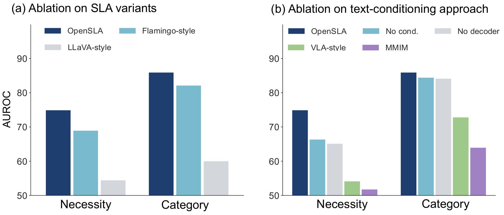

Clinical care
ECG, plethysmography, respiration, blood pressure, SpO₂, and heart rate, with clinical context. Actions span medications, procedures, diagnostic evaluations, and treatment adjustments.
MC-MEDMIMIC-IIIMIMIC-IV · external
Sensors matter not only for describing what is happening, but for informing what to do next.
Today’s sensor models recognize states or predict outcomes. The actions that follow are modeled separately, each with its own formulation and a closed label space — so there is no common way to relate sensor evidence, context, and the decisions they support.
Unlike fixed labels, language can express task intent, individual context, physiological state, and action semantics together. That lets very different sensor-action problems be written in one common form.
OpenSLA puts Sensor-Language-Action modeling into practice: a single model for hierarchical action prediction, sensor-state understanding, and action explanation, grounded in the underlying sensor evidence.
“Can sensor data, language, and action be modeled through a unified framework?”
One benchmark for sensing, language, and action
The same model answers all three from one sensor window and the individual’s context.
67-year-old male · complaint: fever · prior history …
Multi-level action prediction
Sensor-state understanding
Action-evidence grounding
Rapid breathing provides context for the recorded nebulizer.
Example outputs shown in Fig. 1 of the paper, abbreviated. Traces are illustrative.
Benchmark
We build a sensor-action testbed from six development datasets and one external cohort. Each sample pairs a multimodal sensor window with individual context, a recorded action, and multi-faceted captions. Train, validation, and test splits are individual-disjoint.
ECG, plethysmography, respiration, blood pressure, SpO₂, and heart rate, with clinical context. Actions span medications, procedures, diagnostic evaluations, and treatment adjustments.
MC-MEDMIMIC-IIIMIMIC-IV · externalPerioperative waveforms and numerical measurements, aligned with the actions taken during surgery.
MOVERVitalDBContinuous glucose time series with basal-insulin delivery, recorded in daily life. The action is insulin bolus delivery.
MetaboNetPEDAPActions from every dataset are organized into one three-level hierarchy. An Imipenem administration, for example, reads:
Each window is captioned along four complementary facets, which serve as language supervision. Select a facet for an example.

Method
OpenSLA takes sensor tokens, natural-language instructions, and individual context as input, and produces both structured actions and text. It is trained jointly with action-prediction and autoregressive caption-generation objectives; the language backbone is adapted with LoRA, and the remaining pretrained modules stay frozen.
Each channel is encoded independently by a frozen signal encoder. A Hierarchical Memory layer then compresses the tokens across resolutions with learned queries, while global queries attend to the full sequence to keep sample-level semantics.
A LoRA-adapted language model (Qwen-3.5-2B) reads the sensor tokens together with the language context. Prediction heads output action necessity, action category, and the fine-grained label.
A gated residual caption decoder refines the caption states through two cross-attention branches — over the predicted action profile and over retrieved sensor evidence — before the language-model head.

Results
We compare OpenSLA with supervised models, time-series foundation models, sensor-language models, and multi-modal LLMs on six cohorts. All methods trained on our cohorts use the same training data and compute budget. Each takeaway below is paired with the table or figure that supports it.
OpenSLA has the highest balanced accuracy for action necessity in all six cohorts, and for action category in five. The gains are largest in the clinical and operating-room settings, where textual individual context is most valuable; sensor-only prediction is hardest in the operating room.
Limitation. Action category on CGM remains difficult: insulin decisions can depend on future carbohydrate intake that the observed window does not contain.
Balanced accuracy (%), test split; 50 is chance. Baseline = best of eight compared methods per cohort. From Tables 2–4.
We extract physiological measurements from the generated captions and compare them with ground truth. OpenSLA gives the most accurate estimates among the compared methods; gains are most pronounced in the clinical domain, where modalities carry complementary information.
| Method | Clinical | Operating room | CGM | |||||
|---|---|---|---|---|---|---|---|---|
| Cardiac index | ECG-II rate | Resp. rate | Resp. rate | Temperature | EtCO₂ | Basal rate | Carb amount | |
| Multi-modal LLMs | ||||||||
| GPT-5.6-Luna | – | 28.42 | – | – | – | – | 0.07 | 2.7 |
| DeepSeek-V3.2 | – | 26.48 | 8.27 | – | – | – | 0.43 | 3.7 |
| Sensor-language models | ||||||||
| OpenTSLM | 1.13 | 21.37 | 6.71 | 2.66 | 0.66 | 5.47 | 0.58 | 1.2 |
| SensorLM | – | 20.52 | 5.87 | 2.56 | 0.66 | 9.76 | 0.54 | 13.5 |
| SLA | ||||||||
| OpenSLA-B | 0.93 | 20.11 | 1.59 | 2.48 | 0.64 | 5.13 | 0.07 | 0.73 |
| OpenSLA-H | 1.01 | 15.88 | 1.17 | 1.41 | 0.47 | 3.18 | 0.35 | 0.38 |

Measured by BERTScore against reference action-evidence captions, OpenSLA reaches strong agreement across domains. The adapted OpenTSLM is also competitive, and both score higher than the API-based LLMs.
| Method | Clinical | Operating room | CGM | |||
|---|---|---|---|---|---|---|
| MC-MED | MIMIC-III | MOVER | VitalDB | MetaboNet | PEDAP | |
| Multi-modal LLMs | ||||||
| GPT-5.6-Luna | 75.1 | 75.1 | 70.7 | 71.4 | 76.1 | 76.6 |
| DeepSeek-V3.2 | 73.8 | 73.2 | 69.9 | 71.2 | 74.5 | 75.5 |
| Sensor-language models | ||||||
| OpenTSLM | 79.5 | 80.3 | 81.7 | 80.7 | 84.4 | 83.2 |
| SensorLM | 77.2 | 78.8 | 67.9 | 69.8 | 76.1 | 76.4 |
| SLA | ||||||
| OpenSLA-B | 81.5 | 78.6 | 81.5 | 80.9 | 85.6 | 87.6 |
| OpenSLA-H | 82.0 | 80.9 | 81.0 | 80.7 | 80.4 | 76.7 |
In the PCA-reduced representation space of MIMIC-III, semantically related actions occupy nearby regions: antibiotics form a compact cluster, and Imipenem — a label absent from the supervised action targets — sits close to it. With parameters fixed, OpenSLA-H reaches the highest balanced accuracy on the unseen-label-versus-no-action task.

Interpolating between the representations of two samples with different insulin actions, and retrieving the nearest real sample at each point, gives doses that vary monotonically along the path. Separately, with the backbone frozen, ridge readouts trained on the next two hours of glucose (mean, minimum, maximum, slope) show that the representations retain information about future dynamics beyond the action targets used in training.

On waveform-linked MIMIC-IV, evaluated without additional fine-tuning and with the existing clinical action vocabulary, both OpenSLA variants outperform the adapted sensor-language baselines on necessity and category balanced accuracy.
| Method | Necessity | Category | ||
|---|---|---|---|---|
| AUROC | BAcc | AUROC | BAcc | |
| OpenTSLM | – | 69.30 | – | 54.33 |
| SensorLM | – | 67.70 | – | 50.02 |
| OpenSLA-B | 81.75 | 74.40 | 74.64 | 56.35 |
| OpenSLA-H | 80.52 | 73.00 | 74.90 | 58.49 |
Action-only training, which removes caption generation and its loss, is lowest on every endpoint. Both caption-generating ablations improve over it, and explicit action conditioning and the fusion decoder provide further gains.
| Variant | MOVER | VitalDB | ||
|---|---|---|---|---|
| Necessity | Category | Necessity | Category | |
| Action only | 78.1 | 72.1 | 54.1 | 72.8 |
| No action conditioning | 80.4 | 77.2 | 66.3 | 84.4 |
| No fusion decoder | 78.3 | 76.4 | 65.1 | 84.1 |
| OpenSLA-B | 83.4 | 80.4 | 74.9 | 85.9 |
Adding global captions to observational and relational ones improves necessity and category AUROC on MOVER but not on VitalDB. Adding action captions on top raises both metrics on both datasets.
| Caption facets | MOVER | VitalDB | ||
|---|---|---|---|---|
| Necessity | Category | Necessity | Category | |
| Observational + relational | 79.2 | 76.4 | 65.9 | 82.6 |
| + global | 81.6 | 77.5 | 64.3 | 82.3 |
| + action (all four) | 83.4 | 80.4 | 74.9 | 85.9 |
Among LLaVA-style adapter training, Flamingo-style cross-attention injection, and direct low-rank adaptation, direct LoRA achieves the best performance on most operating-room tasks.

On paired validation windows, Hierarchical Memory reduces sensor tokens and forward latency in the clinical and operating-room domains. CGM sequences are already short, so the memory overhead offsets the savings.
| Domain | Sensor tokens | Compression | Speedup |
|---|---|---|---|
| Clinical | 5801.0 → 400.4 | 14.49× | 3.4× |
| Operating room | 3915.8 → 838.0 | 4.67× | 1.7× |
| CGM | 33.0 → 21.0 | 1.57× | 1× |
Conclusion
Sensor-Language-Action modeling uses language as a semantic interface that unifies sensor observations, context, and actions in one framework. With a large-scale benchmark, multi-faceted language supervision, and OpenSLA, it achieves strong performance on action prediction, state understanding, and action explanation. The results point to a broader role for language in sensor intelligence: not only to describe observations, but to organize the knowledge that connects states to actions.
@misc{xu2026opensla,
title = {Sensor-Language-Action Models},
author = {Xu, Yuekai and Shuai, Zitao and Yang, Yuzhe},
year = {2026}
}